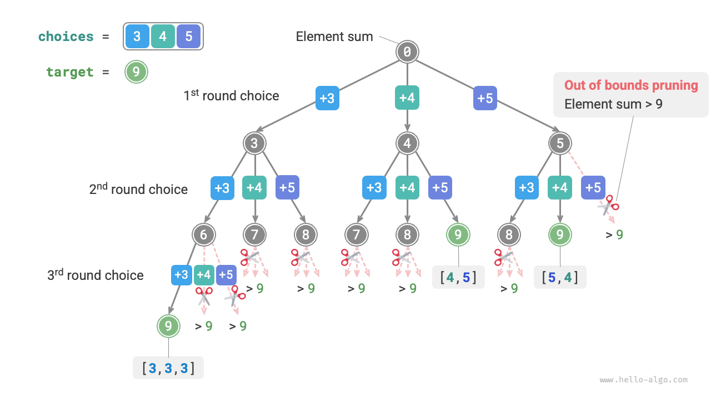
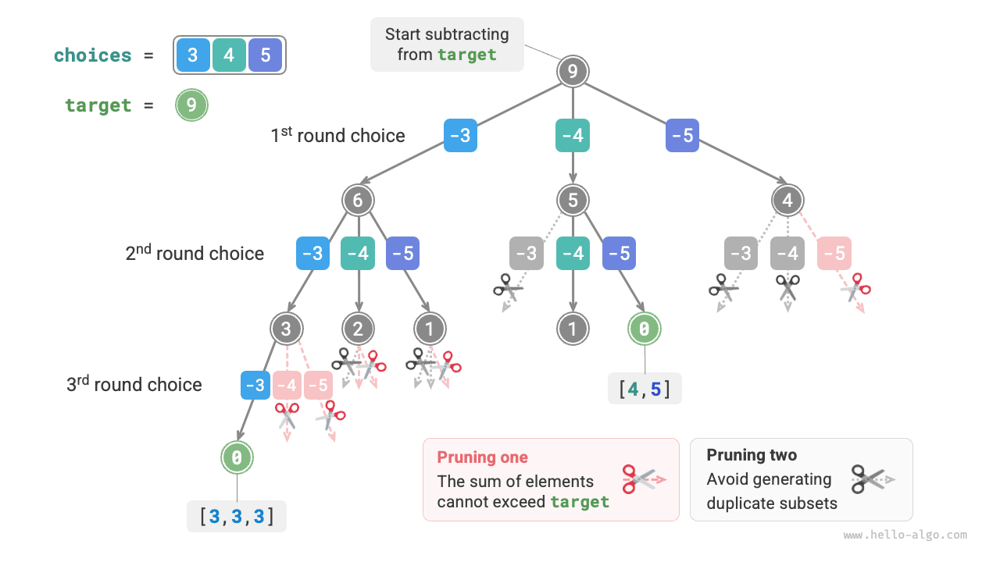
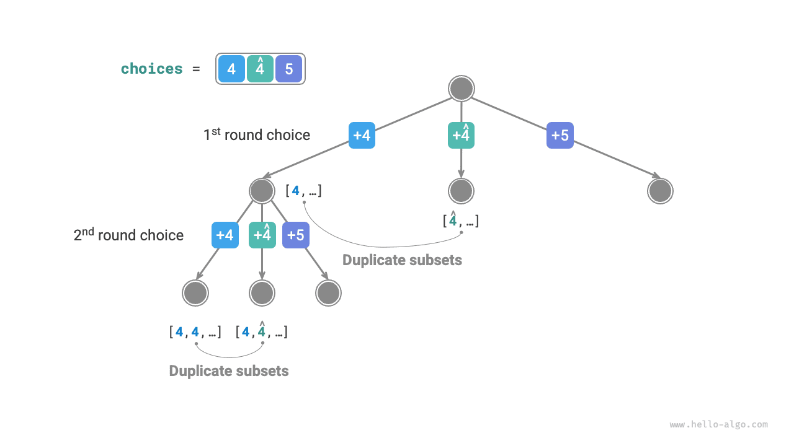

التتبّع الرجعي
مسألة مجموع المجموعات الجزئية
بدون عناصر مكررة
بمعطى مصفوفة أعداد صحيحة موجبة nums وعدد صحيح موجب مستهدف target، ابحث عن جميع التوليفات الممكنة التي يساوي مجموع عناصرها target. ولا تحتوي المصفوفة المعطاة على عناصر مكررة، ويمكن اختيار كل عنصر مراراً. وأعد هذه التوليفات على هيئة قائمة، على ألا تحتوي القائمة على توليفات مكررة.
على سبيل المثال، بمعطى المجموعة ${3, 4, 5}$ والعدد المستهدف $9$، تكون الحلول هي ${3, 3, 3}, {4, 5}$. ولاحظ النقطتين التاليتين:
- يمكن اختيار عناصر مجموعة الإدخال مراراً بلا حد.
- لا تميّز المجموعات الجزئية ترتيب العناصر؛ فمثلاً ${4, 5}$ و${5, 4}$ هما المجموعة الجزئية نفسها.
الاستعانة بحل التباديل كمرجع
على غرار مسألة التباديل، يمكننا النظر إلى عملية توليد المجموعات الجزئية كنتيجة لسلسلة من الاختيارات، وتحديث المجموع الجاري أثناء عملية الاختيار. وعندما يساوي المجموع target، نسجّل المجموعة الجزئية في قائمة النتائج.
وبخلاف مسألة التباديل، يمكن اختيار العناصر في هذه المسألة أي عدد من المرات، لذا لا حاجة إلى استخدام قائمة منطقية selected لتتبّع ما إذا كان عنصر قد اختير بالفعل. وبتغييرات صغيرة على شيفرة التباديل نحصل على حل أولي:
Go
/* حل مجموع المجموعات الجزئية I (مع توليفات مكررة) */
func subsetSumINaive(nums []int, target int) [][]int {
state := make([]int, 0) // الحالة (المجموعة الجزئية)
total := 0 // مجموع المجموعة الجزئية
res := make([][]int, 0) // قائمة النتائج (قائمة المجموعات الجزئية)
backtrackSubsetSumINaive(total, target, &state, &nums, &res)
return res
}
TypeScript
/* حل مجموع المجموعات الجزئية I (مع توليفات مكررة) */
function subsetSumINaive(nums: number[], target: number): number[][] {
const state = []; // الحالة (المجموعة الجزئية)
const total = 0; // مجموع المجموعة الجزئية
const res = []; // قائمة النتائج (قائمة المجموعات الجزئية)
backtrack(state, target, total, nums, res);
return res;
}
وبتشغيل الشيفرة أعلاه على المصفوفة $[3, 4, 5]$ بالقيمة المستهدفة $9$ نحصل على $[3, 3, 3], [4, 5], [5, 4]$. ورغم أننا نجحنا في العثور على جميع المجموعات الجزئية التي يساوي مجموعها $9$، فإن هناك مجموعتين جزئيتين مكررتين $[4, 5]$ و$[5, 4]$.
والسبب أن عملية البحث تميّز ترتيب الاختيارات، بينما لا تميّز المجموعات الجزئية ترتيب الاختيار. وكما يوضح الشكل أدناه، فاختيار 4 أولاً ثم 5 يختلف عن اختيار 5 أولاً ثم 4، وهما فرعان مختلفان لكنهما يقابلان المجموعة الجزئية نفسها.

لإزالة المجموعات الجزئية المكررة، تُعَدّ إزالة التكرار من قائمة النتائج فكرة مباشرة. غير أن هذا النهج غير فعّال للغاية لسببين:
- عندما تكون عناصر المصفوفة كثيرة، خصوصاً عندما يكون
targetكبيراً، تولّد عملية البحث مجموعات جزئية مكررة كثيرة. - تستغرق مقارنة المجموعات الجزئية (المصفوفات) وقتاً طويلاً، إذ تتطلب ترتيب المصفوفات أولاً ثم مقارنة كل عنصر فيها.
تشذيب المجموعات الجزئية المكررة
نفكّر في إزالة التكرار عبر التشذيب أثناء عملية البحث. وبمراقبة الشكل أدناه، تظهر المجموعات الجزئية المكررة عندما تُختار عناصر المصفوفة بترتيبات مختلفة، كما في الحالات التالية:
- عندما تختار الجولتان الأولى والثانية $3$ و$4$ على التوالي، تُولَّد جميع المجموعات الجزئية الحاوية هذين العنصرين، ويُرمز إليها بـ$[3, 4, \dots]$.
- بعد ذلك، عندما تختار الجولة الأولى $4$، ينبغي أن تتخطى الجولة الثانية $3$، لأن المجموعة الجزئية $[4, 3, \dots]$ المولَّدة بهذا الاختيار نسخة مطابقة تماماً للمجموعة الجزئية المولَّدة في الخطوة
1.
في عملية البحث تُجرَّب اختيارات كل مستوى من اليسار إلى اليمين، لذا تُشذَّب الفروع الواقعة في أقصى اليمين أكثر من غيرها.
- تختار الجولتان الأولى والثانية $3$ و$5$، فتتولّد المجموعة الجزئية $[3, 5, \dots]$.
- تختار الجولتان الأولى والثانية $4$ و$5$، فتتولّد المجموعة الجزئية $[4, 5, \dots]$.
- إذا اختارت الجولة الأولى $5$، ينبغي أن تتخطى الجولة الثانية $3$ و$4$، لأن المجموعتين الجزئيتين $[5, 3, \dots]$ و$[5, 4, \dots]$ نسختان مطابقتان تماماً للمجموعتين الجزئيتين الموصوفتين في الخطوتين
1.و2.

وخلاصة القول، بمعطى مصفوفة إدخال $[x_1, x_2, \dots, x_n]$، لتكن متتالية الاختيار في عملية البحث $[x_{i_1}, x_{i_2}, \dots, x_{i_m}]$. ويجب أن تحقق متتالية الاختيار هذه $i_1 \leq i_2 \leq \dots \leq i_m$؛ وأي متتالية اختيار لا تحقق هذا الشرط ستؤدي إلى تكرارات وينبغي تشذيبها.
تنفيذ الشيفرة
لتنفيذ هذا التشذيب، نهيّئ متغيراً start للإشارة إلى نقطة بداية الاجتياز. وبعد اتخاذ الاختيار $x_{i}$، نجعل الجولة التالية تبدأ الاجتياز من الفهرس $i$. وهذا يضمن أن تحقق متتالية الاختيار $i_1 \leq i_2 \leq \dots \leq i_m$، بما يضمن تفرّد المجموعات الجزئية.
وإضافة إلى ذلك، أجرينا التحسينين التاليين على الشيفرة:
- قبل بدء البحث، رتّب المصفوفة
numsأولاً. وعند اجتياز جميع الاختيارات، أنهِ الحلقة فوراً عندما يتجاوز مجموع المجموعة الجزئيةtarget، لأن العناصر اللاحقة أكبر، ومجموعها الجزئي سيتجاوزtargetحتماً. - احذف متغير مجموع العناصر
totalواستخدم الطرح منtargetلتتبّع مجموع العناصر. وسجّل الحل عندما يساويtargetالقيمة $0$.
Go
/* حل مجموع المجموعات الجزئية I */
func subsetSumI(nums []int, target int) [][]int {
state := make([]int, 0) // الحالة (المجموعة الجزئية)
sort.Ints(nums) // رتّب nums
start := 0 // نقطة بداية الاجتياز
res := make([][]int, 0) // قائمة النتائج (قائمة المجموعات الجزئية)
backtrackSubsetSumI(start, target, &state, &nums, &res)
return res
}
TypeScript
/* حل مجموع المجموعات الجزئية I */
function subsetSumI(nums: number[], target: number): number[][] {
const state = []; // الحالة (المجموعة الجزئية)
nums.sort((a, b) => a - b); // رتّب nums
const start = 0; // نقطة بداية الاجتياز
const res = []; // قائمة النتائج (قائمة المجموعات الجزئية)
backtrack(state, target, nums, start, res);
return res;
}
ويوضح الشكل أدناه عملية التتبّع الرجعي الكاملة الناتجة عن تشغيل الشيفرة أعلاه على المصفوفة $[3, 4, 5]$ بالقيمة المستهدفة $9$.

مع وجود عناصر مكررة في المصفوفة
بمعطى مصفوفة أعداد صحيحة موجبة nums وعدد صحيح موجب مستهدف target، ابحث عن جميع التوليفات الممكنة التي يساوي مجموع عناصرها target. وقد تحتوي المصفوفة المعطاة على عناصر مكررة، ويمكن اختيار كل عنصر مرة واحدة على الأكثر. وأعد هذه التوليفات على هيئة قائمة، على ألا تحتوي القائمة على توليفات مكررة.
وبالمقارنة بالمسألة السابقة، قد تحتوي مصفوفة الإدخال في هذه المسألة على عناصر مكررة، وهذا يطرح مشكلة جديدة. فمثلاً بمعطى المصفوفة $[4, \hat{4}, 5]$ والقيمة المستهدفة $9$، يكون ناتج الشيفرة الحالية $[4, 5], [\hat{4}, 5]$، وهو يحتوي على مجموعتين جزئيتين مكررتين.
وسبب هذا التكرار هو اختيار عناصر متساوية مراراً في جولة معينة. وفي الشكل أدناه، تحتوي الجولة الأولى على ثلاثة اختيارات، اثنان منها $4$، مما ينشئ فرعي بحث مكررين يخرجان مجموعتين جزئيتين مكررتين. وبالمثل، ينتج العددان $4$ في الجولة الثانية أيضاً مجموعات جزئية مكررة.

تشذيب العناصر المتساوية
لحل هذه المشكلة، يلزمنا تقييد العناصر المتساوية بحيث تُختار مرة واحدة فقط في كل جولة. والتنفيذ بارع نوعاً ما: بما أن المصفوفة مرتبة بالفعل، فالعناصر المتساوية متجاورة. وهذا يعني أنه في جولة اختيار معينة، إذا ساوى العنصر الحالي العنصر الواقع على يساره، فقد اختيرت القيمة نفسها بالفعل في هذه الجولة، لذا نتخطى العنصر الحالي مباشرة.
وفي الوقت نفسه، تحدّد هذه المسألة أن كل عنصر من عناصر المصفوفة يمكن اختياره مرة واحدة فقط. ولحسن الحظ، يمكننا أيضاً استخدام المتغير start لتلبية هذا القيد: بعد اتخاذ الاختيار $x_{i}$، نجعل الجولة التالية تبدأ الاجتياز من الفهرس $i + 1$ فصاعداً. وهذا يزيل المجموعات الجزئية المكررة ويتجنّب اختيار العناصر مراراً في آن واحد.
تنفيذ الشيفرة
يوضح الشكل أدناه عملية التتبّع الرجعي للمصفوفة $[4, 4, 5]$ بالقيمة المستهدفة $9$، وتتضمن أربعة أنواع من عمليات التشذيب. اجمع بين الرسم وتعليقات الشيفرة لفهم عملية البحث بأكملها وكيفية عمل كل عملية تشذيب.